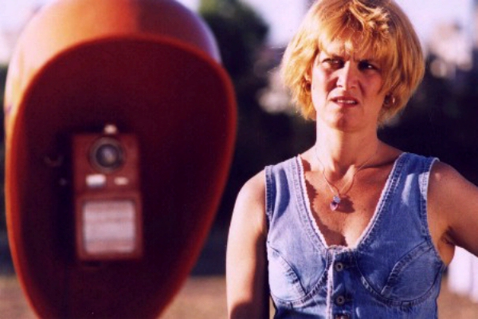

TRÊS MINUTOS (Tres Minutos)
|
(35 mm, 6 min, cor, 1999) |
 Foto por Carlos Gerbase: Lisa Becker |
{kind=link}
ASSISTIR (PORTA-CURTAS)
Dirección: Ana Luiza Azevedo
Producción Executiva: Nora Goulart y Luciana Tomasi
Guión: Jorge Furtado
Dirección de Fotografia: Alex Sernambi
Dirección de Arte: Fiapo Barth
Música: Leo Henkin
Montaje: Giba Assis Brasil
Una Producción de la Casa de Cinema PoA
Elenco Principal
Lisa Becker (Marília)
Werner Schünemann (Voz del Mago, portugués)
Sérgio Lulkin (Voz del Mago, inglês)
CRÉDITOS COMPLETOS
Prêmios
- 27º Festival de Gramado, Cine Latino y Brasileño, 1999:
Premio Especial del Jurado de Cortos Gauchos. - 10º Festival Internacional de Cortometrajes de São Paulo, 1999:
Destaque del Jurado Popular (entre las 10 películas más votadas), Selección del Espacio Unibanco - 7º Festival de Cine y Vídeo de Cuiabá, 1999:
Mejor Dirección de Arte - 6º Vitoria Cine Vídeo, 1999:
Mejor Película de Ficción y Mejor Dirección de Arte - 32º Festival de Brasilia del Cine Brasileño, 1999:
Mejor Película de Cortometraje - 1º Grande Premio Cine Brasil (Ministerio de la Cultura), 2000:
Premio Humberto Mauro para el Mejor Cortometraje - 53º Festival de Cine de Cannes, Francia, 2000:
Único corto brasileño seleccionado para la competición oficial. - 8º Festival de Capalbio (Italia), 2001:
Premio Haibun para la mejor idea creativa. - Integrante da Mostra "Os 30 Clássicos do Curta Brasileiro na Década de 90", a partir de seleção feita por personalidades do cinema do país.
Crítica
"Tres Minutos es puro cine: se decide el destino de una pareja en el tiempo que dura una ficha telefónica, una carrera de turnos (vista por la TV) y la ebullición del agua del café."
(José Geraldo Couto, Folha de São Paulo, 20/08/99)
"Ana Luiza Azevedo ya realizó otras buenas películas de temáticas social, y aquí ella da su mensaje sobre la condición femenina en la sociedad de hoy a través de un mensaje dejado en un contestador automático."
(M.J., Jornal do Brasil, 23/11/99)
"Tres minutos es una película de sensibilidad femenina, dirigida con talento y rigor. Ese es el tiempo en que se puede tomar la decisión que va a cambiar una vida - o dos, ya que la decisión es de una mujer que necesita enfrentar el dilema de irse y dejar el hombre que ama o quedarse con él y frustrarse. Bonito y delicado.
(Luiz Zanin Oricchio, O Estado de São Paulo, 30/11/99)
"Três Minutos, de Ana Luiza Azevedo, trata também de uma figura socialmente eclipsada - no caso, a mulher de um mágico de circo mambembe. A luz crepuscular define o destino dessa mulher ansiosa não por uma vida nômade a aventureira, mas sedentária e segura. A imagem de um trailer no descampado, a figura de Mandrake pintada na lataria e a voz do mágico na secretária eletrônica, dizendo que nem mesmo ele pode estar em todos os lugares ao mesmo tempo, sugerem uma aproximação com o imaginário felliniano. (...) Três Minutos representa mais do que um drama particular. É um painel sociológico feito com muita imaginação, sensibilidade e um cuidado raro de Producción (a cargo de Fiapo Barth)."
(Antônio Gonçalves Filho, O Estado de S.Paulo, 02/03/2000)
"Encore plus impressionant, par sa maîtrisse du langage cinématographique, est TROIS MINUTES, de la Brésillienne Ana Luiza Azevedo, qui, en deux fois plus de temps que ne le prétend son titre, construit une subtile évocation du paysage mental d'une femme victime d'un rêve d'enfance. Tous les films de ce programme racontent des histoires, ou les suggèrent, aucun n'enonce un discours, préferant faire confiance à la mise en scène et à ses moyens particulliers pour produire émotion et amusement."
(Jean-Michel Frodom, Le Monde 23/05/2000)
"La película de Ana Luiza Azevedo dura sólo tres minutos, pero en ésta hay de los temas fundamentales: la ruptura sentimental y el deseo de encontrar un futuro mejor."
(Juan Rodríguez Flores, La Opinión, Los Angeles, 28/07/2000)
23/06/1999